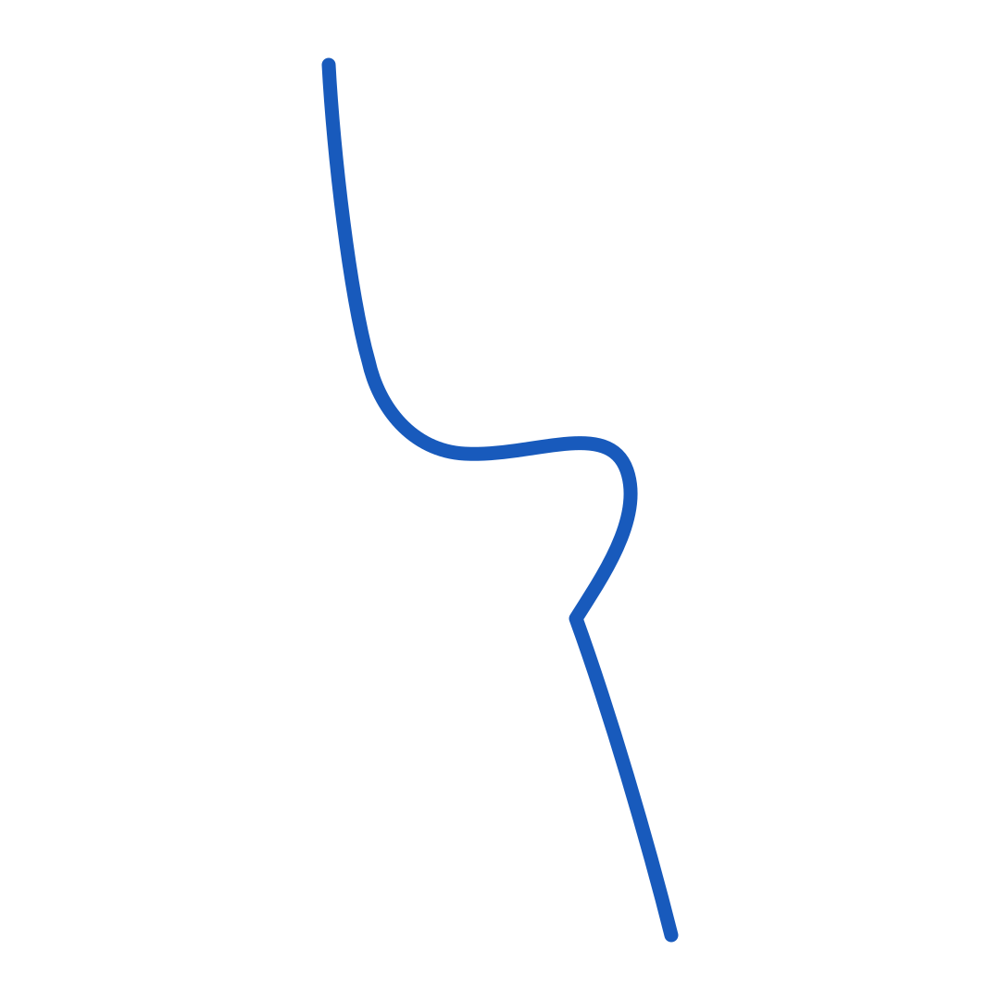

Your S-shaped lightning bolt, traced into a repeatable vector. Eight rotations create the central mandala and the long, paired eyes. The live app logo has not changed.
Compare the geometry above, then check the actual sizes below.
Your original
The source of the construction
Paired, sweeping tails surround a dense mandala with a small opening. The trace keeps this relationship and regularizes the rotation and curves.
Original artwork is unchanged. Only the preview crops its surrounding whitespace.
These are true CSS pixel sizes, without enlargement. Blue appears on the app background, black on white.
A · Faithful
36px header
24px
36px
24px
B · Calligraphic
36px header
24px
36px
24px
C · Ornamental
36px header
24px
36px
24px
Small-size limit: the central opening is retained, but the fine eyes and crossings compress at 24px. C’s inset contours and weave are intended for larger use, preferably 96px and above. B’s finest tips become faint at small sizes. A is the strongest starting point for the app header.
The S that makes the whole mark

One master path × eight rotations, spaced 45° apart. Each path runs from one long tail, through the curved middle, to the opposite tail. Opposite copies meet at the tips and separate inward, creating the eyes.
The bolt’s tilted tails preserve the sketch’s orientation.
The central opening is empty space between the paths. No circular hole is cut out.
A uses the centerline directly. B adds a varying-width outline around it. C adds repeated insets and one woven crossing per copy.
Hand tremor, uneven lengths, and inconsistent spacing were regularized. Eight identical copies now share one rotation center. The center stays dense while the outer eyes remain long and narrow.
What stays yours
The S-shaped construction, paired rays, tilted star silhouette, and naturally formed mandala. These are vector interpretations of the drawing, not a pixel-for-pixel reproduction of its irregularities.